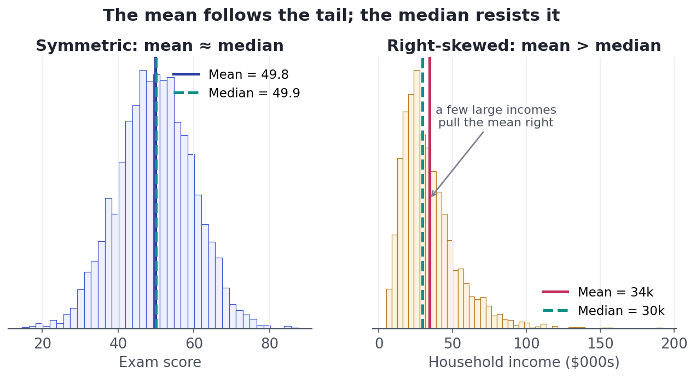
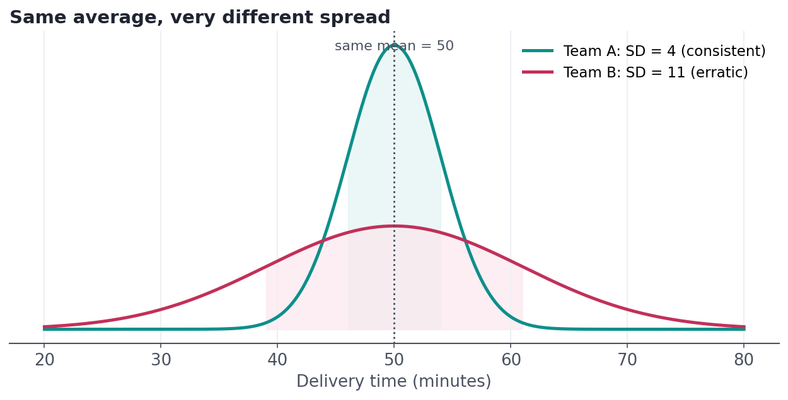
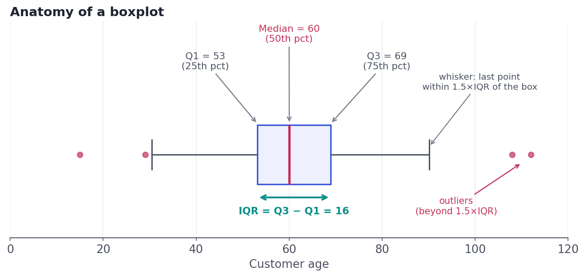

Describing Data: Center & Spread
Mean, median, variance, percentiles — the handful of numbers that summarize a column, and exactly when each one lies to you.
Nobody can stare at 10,000 numbers and understand them. So we compress a column down to a few numbers that capture its story. But a careless summary doesn't just lose detail — it can actively lie, hiding a skew or a fortune in outliers behind a single innocent-looking average. This lesson teaches the handful of summary numbers every analyst uses, and — just as important — exactly when each one deceives you.
Concept · part 1Center: what's a typical value?
The first question about any numeric column is "where's the middle?" There are three common answers, and they are not interchangeable:
- The mean (average): add up all values and divide by how many there are. It uses every value, which makes it powerful — and fragile.
- The median: line the values up in order and take the middle one (with an even count, average the two middle values). Exactly half the data sits on each side.
- The mode: the most frequently occurring value. It's the only center that works for nominal categories (the most common city, say).
Here's the crucial difference. The mean is a balance point — every value pulls on it, so one giant value drags it. The median is a position — it only cares about order, so extreme values barely move it. Watch what happens when a distribution is skewed (stretched out to one side):

A quick diagnostic you'll use forever: if the mean is much bigger than the median, the data is right-skewed (a tail of large values). If the mean is much smaller, it's left-skewed. When they're close, the distribution is roughly symmetric. You can sense the shape from two numbers.
Concept · part 2Spread: how much do values vary?
Center alone is dangerously incomplete. Two teams can both average a 50-minute delivery time, but if one is always 48–52 minutes and the other swings from 30 to 70, they are completely different operations. Spread measures that variability. The main tools:
- Range: max minus min. Simple, but defined entirely by the two most extreme points, so it's jumpy and outlier-sensitive.
- Variance: the average squared distance of each value from the mean. Squaring keeps negatives from cancelling positives and punishes big deviations.
- Standard deviation (SD): the square root of the variance. This is the headline spread number because it's back in the original units — minutes, dollars — so you can read it as "the typical distance from the mean."
- IQR (interquartile range): the range of the middle 50% of the data (we'll define it precisely in a moment). It ignores the extremes, so it's robust like the median.
Read it as: take each value's distance from the mean x̄, square it, average those (dividing by n−1 — see the deep dive), then square-root to get back to real units.

Concept · part 3The five-number summary and the boxplot
A percentile is the value below which a given percentage of the data falls — the 25th percentile is the value with a quarter of the data beneath it. Three percentiles are so useful they get names, the quartiles: Q1 (25th), Q2 (50th, the median), and Q3 (75th). With the min and max, those make the five-number summary. The IQR is simply Q3 − Q1 — the width of the middle half of the data.
The boxplot draws all of this at once, and it's the single most useful chart for comparing distributions. Learn to read its anatomy:

The 1.5×IQR whisker rule is a widely used convention (due to John Tukey), not a law of nature — it's a practical fence for flagging points worth a second look, not proof that a point is an error. Always investigate flagged outliers; never delete them reflexively.
Worked exampleWatch robustness happen
Let's compute every one of these on a tiny, realistic dataset: nine salaries on a small team where the founder earns far more than everyone else. Pay attention to how differently the mean and median react when we remove that one outlier.
import pandas as pd
# Annual salaries on a small team ($000s). Notice the founder's pay.
salary = pd.Series([52, 55, 58, 61, 49, 63, 57, 60, 240], name="salary_k")
print(f"count = {salary.size}")
print(f"mean = {salary.mean():.1f}")
print(f"median = {salary.median():.1f}")
print(f"std dev = {salary.std():.1f}")
q1, q3 = salary.quantile([0.25, 0.75])
print(f"IQR = {q3 - q1:.1f} (Q1={q1:.0f}, Q3={q3:.0f})")
# Remove the single outlier and watch which number barely moves.
core = salary[salary < 200]
print(f"\nwithout the 240 outlier: mean = {core.mean():.1f} median = {core.median():.1f}")
print("The mean fell by ~20; the median barely flinched. That is robustness.")count = 9 mean = 77.2 median = 58.0 std dev = 61.2 IQR = 6.0 (Q1=55, Q3=61) without the 240 outlier: mean = 56.9 median = 57.5 The mean fell by ~20; the median barely flinched. That is robustness.
With the founder included, the mean salary is $77k — yet eight of the nine people earn less than that. The mean describes nobody. The median of $58k is a far more honest 'typical salary.' Remove the outlier and the mean lurches by $20k while the median moves less than a thousand. That gap is the meaning of robustness, and it's why median income, median home price, and median response time are reported instead of means.
Use the mean for roughly symmetric data with no wild outliers — it's efficient and feeds into most statistical methods. Switch to the median when the data is skewed or has outliers (income, prices, wait times, anything with a long tail). When in doubt, report both and plot the distribution — if they disagree, the distribution is trying to tell you something.
★ Key points to remember
- Center: mean (balance point, uses every value, outlier-sensitive), median (the middle, robust), mode (most common, the only center for categories).
- mean > median ⇒ right-skew; mean < median ⇒ left-skew; close ⇒ roughly symmetric.
- Spread: standard deviation = typical distance from the mean, in original units; IQR = width of the middle 50%, robust to outliers.
- The five-number summary (min, Q1, median, Q3, max) is drawn by a boxplot, which reveals center, spread, skew, and outliers at a glance.
- Pick median + IQR for skewed/outlier-prone data; mean + SD for symmetric data.
◆ Practice▸
Show solution & reasoning
Mean = (2+3+3+4+8)/5 = 20/5 = 4.0. Median = middle of the sorted list 2,3,3,4,8 = 3. Mode = 3 (appears twice). Range = 8 − 2 = 6. The value 8 pulls the mean up to 4.0, above the median of 3; with a small right skew like this the median (3) better represents a typical value.
Show solution & reasoning
The 40.0 is a glaring outlier (maybe a timeout). The mean is (1.0+1.1+0.9+1.2+1.0+40.0)/6 ≈ 7.5 s — absurd, since five of six requests took about a second. The SD would be huge, also driven by the one point. The median is the average of the 3rd and 4th sorted values (1.0 and 1.1) ≈ 1.05 s, and the IQR stays around a few tenths of a second — both robust to the outlier. So median + IQR is far more honest here, and you'd separately investigate the 40-second request.
◎ Deep dive: why we square deviations, and the mystery of n − 1▸
Why square the deviations? When measuring spread, we want distances from the mean. If we just averaged the raw deviations (x<sub>i</sub> − x̄), they'd always sum to zero — the positives and negatives cancel exactly. Squaring removes the sign and, as a bonus, penalizes large deviations more than small ones, which suits many natural processes. We then square-root at the end (the SD) to return to the original units.
Why divide by n − 1, not n? When you compute spread around the sample mean (rather than the unknown true mean), the data sits slightly closer to its own mean than to the truth, so dividing by n would systematically underestimate the real variance. Dividing by n − 1 — the degrees of freedom — corrects that bias. Intuitively, one 'piece of information' was spent estimating the mean, leaving n − 1 independent deviations. With large n the correction barely matters; with small n it matters a lot. This is why pandas and numpy's .std(ddof=1) default differs from the naive formula.
A note on units. Variance is in squared units (dollars-squared?!), which is why we rarely report it directly. The standard deviation, its square root, is in real units and is what you quote to a stakeholder.
Two classics live here. "When would you use the median instead of the mean?" — when the data is skewed or has outliers, because the median is robust (give the income example). And "what's the difference between variance and standard deviation?" — SD is the square root of variance, expressed in the original units, which makes it interpretable as the typical distance from the mean.